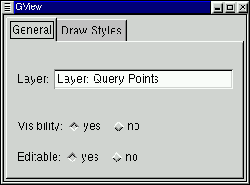
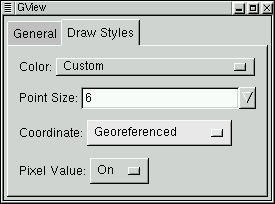

Point Query Properties
The Point Query Properties dialog is used to display and edit properties of a
point query layer. It can be launched by right clicking on the desired
point query layer in the Layer Manipulation Dialog.
General

- Layer: view, and modify the layer name. This name is also
displayed in the Layer Manipulation dialog.
- Visibility: Make this layer visible, or invisible. The same
thing can be accomplished with the eye icon on the Layer Manipulation
dialog.
- Editable: Toggle whether this layer can be edited or not using
the various vector editing tools.
Drawing Style

- Color: Set the color used to draw the points, and text for
the point query layer.
- Point Size: Set the size of the point cross hair (in screen
pixels).
- Coordinate: Select coordinate display option for point query
points.
- Off: Disable display of point coordinates.
- Raster Pixel/Line: Display pixel/line (row/column) locations
on the top raster layer under this location.
- Georeferenced: Show georeferenced coordinates in the georeferencing
system of the view.
- Geodetic (lat/long): Show coordinates reproject into latitude and
longitude.
- Pixel Value: Select whether raster pixel values from the top most
raster layer under the point should be displayed (On) or not
(Off).